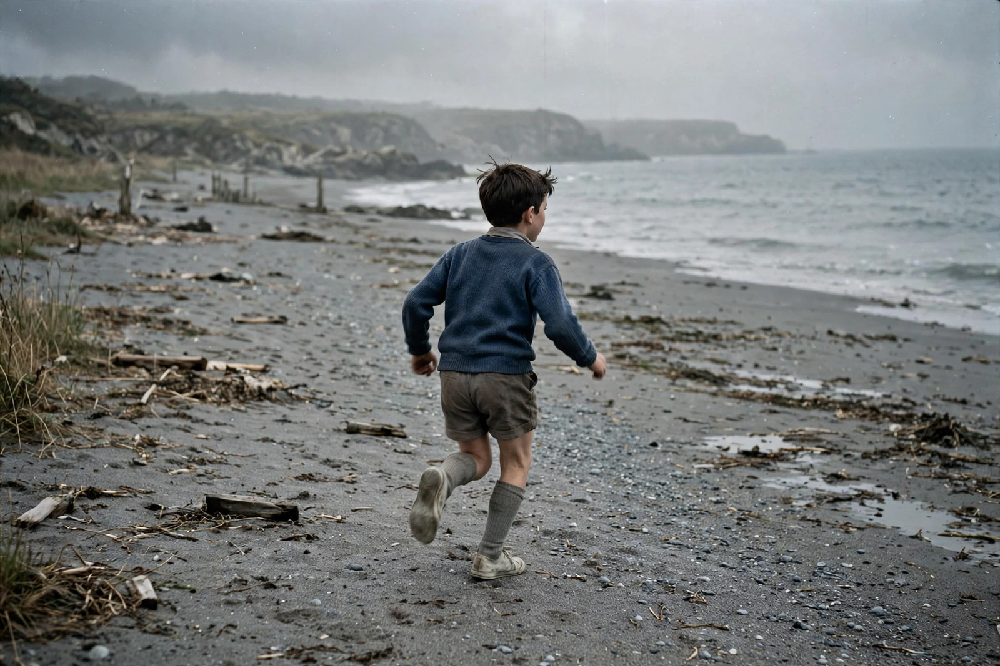

| The 400 Blows | |
|---|---|
 The celebrated final freeze-frame: Antoine reaches the sea | |
| Directed by | François Truffaut |
| Written by | François Truffaut, Marcel Moussy |
| Starring | Jean-Pierre Léaud, Claire Maurier, Albert Rémy |
| French title | Les Quatre Cents Coups |
| Release date | 4 May 1959 (Cannes); 3 June 1959 (France) |
| Running time | 99 minutes |
The 400 Blows (French: Les Quatre Cents Coups, literally "the 400 blows" — an idiom meaning "raising hell") is a 1959 French coming-of-age drama film, the directorial debut of François Truffaut and a defining film of the French New Wave. It tells the largely autobiographical story of Antoine Doinel, a misunderstood Parisian schoolboy, played by Jean-Pierre Léaud in the first of five films following the character over twenty years.
Antoine, neglected by his parents and tormented by a strict teacher, drifts into truancy, petty lying, and theft. After stealing a typewriter from his stepfather's office, he is sent to a juvenile detention centre by the sea. In the final sequence Antoine escapes during a football game and runs to the ocean he has never seen; reaching the water, he turns to face the camera, and the film ends on a famous freeze-frame of his face.
The film won Truffaut the Best Director award at the 1959 Cannes Film Festival and was a worldwide success, effectively launching the New Wave internationally. It is dedicated to André Bazin, Truffaut's mentor, who died the day shooting began. The 400 Blows regularly appears on critics' lists of the greatest films ever made, celebrated for its empathy, location shooting, and naturalistic performance by Léaud.